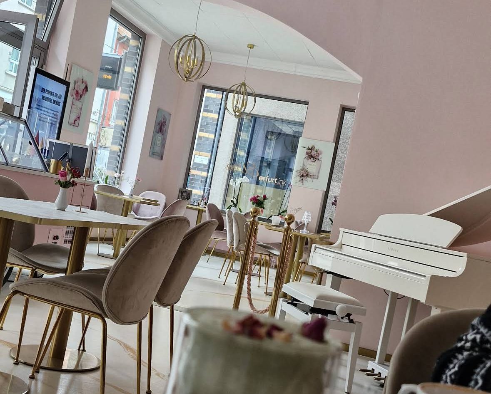

Frühstück
Frisch, reichlich und schön angerichtet – herzhaft mit Brötchen, Käse, Schinken und Bio-Ei oder süß in den Tag. Dazu frisch gepresster Orangensaft.
Schon von außen verzaubert unsere pastellrosa Fassade in der Neuwerkstraße – und drinnen geht es genauso liebevoll weiter: Blumen, zarte Farben und viele kleine Details, die aus einer Kaffeepause einen besonderen Moment machen.
Bei uns steht der Genuss im Mittelpunkt: hausgemachte Torten aus eigener Herstellung, feines Frühstück, Bubble Waffeln, Crêpes, Eis und Kaffeespezialitäten, die so hübsch sind wie sie schmecken. Ein zauberhafter Ort, an dem man sich vom Alltag komplett abgeschottet fühlt.


In unserem Café verbindet sich gemütliches, gehobenes Ambiente mit Livemusik am Klavier. Man merkt die Liebe zum Detail in jeder Ecke – vom Blumenschmuck bis zur hübsch angerichteten Tasse.
Ob zum entspannten Frühstück, für ein Stück Torte am Nachmittag oder für ein besonderes Fest: Unser Team empfängt dich herzlich und aufmerksam und macht deinen Besuch zu einem kleinen Erlebnis.
Vom Frühstück am Morgen bis zum Eisbecher am Nachmittag – frisch zubereitet und mit viel Liebe angerichtet.
Frisch, reichlich und schön angerichtet – herzhaft mit Brötchen, Käse, Schinken und Bio-Ei oder süß in den Tag. Dazu frisch gepresster Orangensaft.
Feine Torten und kleine Kuchen aus eigener Herstellung – täglich frisch in der Vitrine, auf Wunsch auch als Bestelltorte.
Unsere beliebten Bubble Waffeln, klassische Waffeln und Crêpes – süß mit Früchten und Sahne oder herzhaft belegt.
Bunte Eisbecher, Kindereis und cremige Milchshakes – die süße Abkühlung für Groß und Klein.
Vom Cappuccino bis zur pinken Latte Macchiato – dazu Rosenlimonade und viele weitere Getränke.
Geburtstag, Babyparty oder einfach ein Grund zum Anstoßen: Feiere in unserem Café – wir gestalten deinen Tag mit dir.
„Ein wunderschöner Laden, mit Liebe geführt. Gemütliches gehobenes Ambiente mit Livemusik am Klavier und super leckeren herzhaften Speisen und süßen Kreationen. Ein zauberhaftes Café mit Liebe zum Detail."
„Ich habe für meine Mama zum Geburtstag ein paar Törtchen gekauft – die waren sehr lecker. Gut vom Personal beraten und definitiv nicht enttäuscht, weshalb ich gerne wiederkomme."
„Man fühlt sich vom Alltag komplett abgeschottet – so viel Liebe zum Detail. Süße Speisen wie auch Herzhaftes einfach lecker, dazu sehr nettes und aufmerksames Personal."